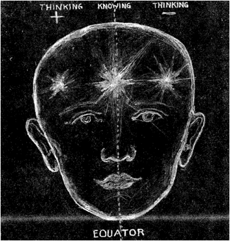
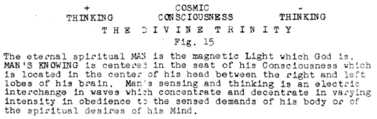
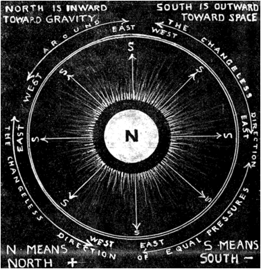
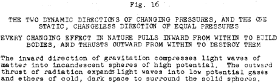

LESSON NUMBER 11 HOW TO THINK - THINKING SCIENTIFICALLY EXPLAINED¶
As a prelude to the following lessons I would like to impress upon you the fact that this is a thought-wave universe. All matter and masses of matter are the bodies of thought.
Thinking is for the purpose of building thought bodies for thought imaginings and creating bodies from matter to image those thoughts. Your body is the image of your thinking. Its state of health or strength is a record of your thinking. If you inherited an imperfect body you can think your knowing in the direction of its perfection.
Your business and social life, likewise, is the image of your thinking. Whatever its form–it is your form. Whatever its body–it is your body.
The standard and status of mankind is the record of world thinking. Whatever its status it is the image of world thinking.
Remember this, however, you can THINK only that which you KNOW.
Your power lies in KNOWLEDGE. Your ability to express that power in building bodies lies in what knowledge your Consciousness is aware of.
You can continually transform yourself, and your life condition, only through continually acquiring greater knowledge. And by knowledge I mean knowledge–not information, theory, affirmation or platitude.
By knowledge I mean that which you can dynamically and scientifically explain–and then demonstrate. By knowledge I mean CAUSE–and by thinking I mean the power to THINK CAUSE INTO BALANCED EFFECT IN THE PERFECT IMAGE OF CAUSE.
Consider how mankind has continually been transformed by greater knowledge of CAUSE, which has enabled him to more and more control EFFECT. Think of mankind’s state of ignorance when Bubonic Plague decimated him by millions.
Think of his endeavors to meet a catastrophe by magic, by witch doctors and rituals based upon superstition and religious fanaticism. And think of the gross ignorance which made religious fanaticism possible in the medieval days of the inquisition and in modern days of only two centuries ago when women were burned alive for witchcraft.
Now think of what the last hundred years of scientific knowledge has done and is doing to lengthen and transform lives and standards of living through increasingly greater obedience to God’s law, and more especially to rid the world of superstition and belief in the supernatural.
Think also of the fact that our ability to obey God’s law is based upon the measure of our KNOWLEDGE of what God’s law is.
That is why I say you must have greater knowledge of what God’s law is, and how it is manifested through the building of thought images in bodies.
This you can get only through the scientific approach. You can never know God through the emotions. Just as science conquered small pox and other dread scourges through knowledge of CAUSE, where magic and witchcraft failed, so must you acquire God powers through scientific knowledge of CAUSE where affirmations, emotional worship, and faith and belief have failed to get you farther than a peep hole into the Light.

Archival Plate (image021.gif)¶

Archival Plate (image022.gif)¶
Affirmations are but one step ahead of magic for they but record wishful thinking instead of action based upon knowing. Likewise the abstractions of metaphysics may even state immortal truths without one’s knowing the meaning of those truths.
And so I say to you who may think of yourself as not “scientific minded”, that is because of a wrong concept of science. When you find that science is simple, and you will find it more and more simple as we proceed, you will feel its might behind your every thought and action as it continually transforms you as inevitably as it has transformed medieval man to modern man.
You have already seen in the last chapter, how many complex effects arising from many seemingly different principles, are but one effect arising from one principle.
As we proceed you will find complexity continually folding up and utterly disappearing in the same simplicity.
As an example of this you now think of the countless many forms, conditions and directions of matter in motion.
You will find, to your amazed and joyful surprise, that there are but two forms in all Nature, two conditions and two directions. And even these pairs of opposites arise from the same effect of concentrative and decentrative thinking, for the two conditions are the polarized positive and negative pressure conditions of divided Father-Motherhood–the two directions are the inward-outward directions of sex interchange between the divided Father and Mother, and the two forms are the balanced forms of the cube of Motherhood and the sphere of the divided Fatherhood of Creation.
Having thus told you these things it is my earnest desire that in your search for the Light of Cosmic Conscious awareness you will give the effort to it with the same inner ecstasy that a composer gives to his as yet unwritten symphony which will require much effort given in love to it before it has a body built by him in his own image.
THE TWO DIRECTIONS OF THINKING¶
Thinking is a two-way, interchange of motion between the divided pairs of sex conditioned opposites–the positive Father condition and the negative Mother condition, which we will hereafter simplify by using the terms positive and negative.
The positive condition of concentrative thinking pulls inward from within toward a focal center.
The negative condition of decentrative thinking thrusts outward from that same center.
These are the only two directions of change in this electrically divided universe. They are the electric directions of inward toward NORTH and the outward direction toward SOUTH.
These are the two directions of the universal heartbeat, and your heartbeat. They are the directions of your inward and outward breathing and of every other effect of motion in the universe.
There is no effect of motion in the universe which is not in effect an outward and inward explosion, whether that effect be the quick effect of dynamite or the slow one of the decay of a tree.
The two directions of an explosion are outward toward South, and inward toward North.
The point of North in matter is its center of gravity. It is the focal center of concentrated thinking. It is the point of maximum compression, maximum heat and incandescence, and the highest potential of the mass.
South is every radial direction away from North. South reaches out into space around every planet and sun. South is the radial direction of decentrated thinking. The farther away South reaches from North the colder it becomes, the lower its potential, the less dense the mass until density disappears in gases and vapors of cold, dark space.
THIS IS A TWO-WAY RADIAL UNIVERSE¶
Because of the two opposed directions of concentrative-decentrative thinking the entire visible universe is composed of spheres. No other form is possible because of it. We shall later see that the cube of space is the only possible form in the invisible universe, and for the same reasons.
We have not yet reached the point where this can be made clear, for we have not arrived at the point where we can begin to discuss waves, wave fields and the workings of opposed pressures in creating a curved universe of two-way spiral interweavings. When we do reach that point God’s simple plan will seem more simple to you because of the impossibility of exceeding the principle of The Divine Trinity in any effect whatsoever.

Archival Plate (image023.gif)¶

Archival Plate (image024.gif)¶
WHAT ABOUT EAST AND WEST?¶
It is quite natural that you should ask me about East and West, for you have been accustomed to those four directions all your life.
That is because you are upon a sphere and you are forever travelling AROUND that sphere.
Consider this for a moment. No matter which direction you go AROUND this spherical earth you will come back to the point you started from–and at every step of your journey you have been in an unchanging relation to the center of gravity.
Every point on the surface of the earth is 15 pounds pressure no matter how many thousands of miles you travel, therefore around is not a direction of change. That is true of every spherical strata above and below the earth. Science terms this equal pressure gradient.
Clouds float around the earth in equal pressure gradients and an airplane set for a straight course likewise curves around the earth in an unchanging pressure gradient.
That is not true of the two radial directions of God’s electric thinking, for each inch in either of the two opposed directions brings you to a continually changing condition. If you travel a few miles away from the earth you can no longer breathe, and you would turn to ice, while you could travel forever around the earth and still be in the same pressure.
THE WHY OF THESE TWO DIRECTIONS¶
THE PURPOSE WHICH THESE TWO DIRECTIONS FULFILL IS TO MANIFEST THE LAW OF LOVE. THIS LAW IS EXPRESSED BY GIVING AND REGIVING.
THE INWARD DIRECTION GIVES LOVE FROM THE MOTHER TO FATHER. THE OUTWARD DIRECTION GIVES LOVE FROM THE FATHER TO THE MOTHER.
The inward direction gives the seed of light from the father to the mother for the forming of bodies. All bodies are but waves of light.
The outward direction unfolds the seed from the womb of the mother for refolding by the father in every pulsation of the electric heartbeat of this pulsing universe. The unfolding expands. The refolding compresses. All bodies are created by interchange between expansion and contraction.
That is the way bodies are born from earths, are given to the heavens–and the heavens regive them to earths for reborning. That is the thought cycle which we call life and death.
You breathe in to live–and out to die.
Growth is inward toward earth–and decay is outward toward space. This fact needs further explanation which will come later. The entire universe of formed, visible compressed bodies appears from invisibility by the concentrative action of thinking–and disappears into formless invisibility by the decentrative reaction of thinking.
ALL PAIRS OF OPPOSITES ARE THE SAME¶
Let us now return to the list of the many pairs of opposites cited in Lesson No. 10. to demonstrate their oneness in principle and purpose.
Instead of using the words CONCENTRATION and DECENTRATION I will substitute the words CHARGE and DISCHARGE, which have the same meaning. In the same connection I will use the words MALE and FEMALE, COMPRESSION and EXPANSION, and GENERATION and DEGENERATION.
When you go to the garage to ask them to charge your battery you actually mean that you want them to charge the positive cell and discharge the negative cell in order to create the two opposite conditions which are necessary for motion.
When you say that your storage battery is “dead” it means exactly the same thing as when you stop thinking. It means that your Mind is in equilibrium. It is not extending thought-waves. It is undivided. An equilibrium must be divided in order to move. The moment you begin to think you are interchanging the positively charged condition of your thought battery with the negatively discharged part of it. There is no such condition in Nature as “negative charge.” That would be equivalent to saying “expanded compression”, or to tell one to “go north south’ or to “boil freeze this water.” Positive charge makes solid bodies from space and negative discharge gives them back to space.
To generate also means to charge, or to compress, or to heat, or to contract, while degeneration means to discharge, expand, cool, or evacuate.
Likewise GRAVITATION is another word for concentration–and RADIATION is another word for decentration. Interchange between these two opposites integrates and disintegrates the universe into solids surrounded by ethers.
These pairs of opposites do not mean pairs of opposite THINGS–it means pairs of opposite CONDITIONS–and all of these conditions are sex conditions. All of them are pressure conditions resulting from the division of an equilibrium into two unbalanced opposites in all matter.
These two opposite pressures of expansion and contraction which generate bodies into solid forms and then radiate them into formlessness are the basis of electricity.
That is what electricity is–a series of opposing strains between the opposing pressures of compression and expansion which simultaneously divide a balanced condition into two equal and opposed unbalanced conditions, and sequentially restores them to balance for endless repetition.
THE SCIENCE OF THINKING–CONTINUED THE HEARTBEAT OF THE UNIVERSE¶
How often we hear the abstract statement that we must have faith and belief in “abundant supply” which will surely come, etc., etc. Abstract statements without knowledge back of them may be comforting for the emotional person but the intellectual demands more explanation than faith and belief in an abstract, unexplained statement.
There will be several more chapters on the scientific explanation of God’s thinking processes telling WHY there is an “abundant supply” and how to get that abundant supply–also to clearly demonstrate that most people are shutting off that abundant supply because they have not the slightest idea of what it all means.
Whenever you ask for something, or desire something to take place, you naturally think of your desire being possibly fulfilled AFTERWARD. And you do not even feel sure of that AFTERWARD. You hope so, but are not sure.
I wish to make it perfectly clear that you already have that for which you ask. It has already come to you simultaneously with your asking. That seems incredible–even amazing–but it is true, nevertheless.
This fact is stated in God’s Message of the Divine Iliad in the following words from The Book of Desire, Chap. VI. 32-33.
“Desire ye what ye will, and behold, it standeth before thee. Throughout the aeons it has been thine without thy knowing, e’en though thou hast but just asked for it.
“Sit thou not and ask, acting not, for unless thou reach out for thy desire it shall not walk thy way to thee, unaided by thy strong arms.”
Think of it this way. In God’s undivided Mind universe the ONE WHOLE IDEA of Creation is complete. It has no relation to time, sequence or separateness.
When you ask for anything you are asking for a separate unit of that ONE WHOLE IDEA. In other words you are separating from it that which you want–and that you can do timelessly in your Mind. You can vision it as a reality in your own undivided Mind universe. You can immediately KNOW your idea and immediately FULFILL it mentally. Thus visioning it as a concept is timeless.
But you must realize that what you really want is to fulfill your desire physically. You want to give it a body. You want to manifest your Mind idea by taking it into the divided universe beyond the vision of it in your imaginings.
That means that you have to THINK your idea out of your timeless KNOWING into a three dimensional universe of time and space. You have to transform a substanceless form of Light, which is a concept in your Mind, into a body which has the substance of light-waves which we think of as matter.
Do I make myself clear? If not I must make myself clear so I will put it in other words.
To desire anything is to create it, for Creation is merely the giving of bodies to desires. You wish to take something from the undivided–AND INDIVISIBLE–universe of rest and project it into the divided universe of motion.
The answer to this lies in the heartbeat of the universe which seemingly divides one condition into two. I say seemingly, for it actually does not divide it. An equilibrium cannot be divided–but God’s thought processes have made it appear to be divided. This mystery will gradually become clear as we proceed.
We will now take the first steps toward clarifying this mystery. Consider your own heartbeat. It pulses inward–then outward. It compresses–then expands.
Your senses tell you that, just as clearly as your senses tell you that the pendulum swings one way–then the other way afterward.
Likewise your senses tell you that the piston of a compression-expansion engine moves toward compression–then, other way afterward.
The important thing which your senses do not tell you is the as yet unknown fact that compression and expansion take place simultaneously–and that which follows afterward is a repetition of the same effect in reverse.
In other words that stroke of the piston which you do see is moving in the opposite direction simultaneously, but that opposite move you cannot see–but you can KNOW it, and from henceforth you MUST know it for in that knowing is the explanation of the fact that anything you ask of God is simultaneously answered in the thought universe in which you asked it.
While asking it you already have it but do not know it. All you now have to do is to give it a body through equal cooperation with God. But this is where you fail for you do not yet realize that at the precise second of the beginning of your desire God also began the fulfillment of it IN THE ACTUAL MEASURE OF YOUR DESIRE. God continues to fulfill it with you until you, yourself, stop fulfilling it or work against it yourself, unknowingly.
As an actual fact, that which you desired is already surveyed and patterned in space in the measure of your desire–and in its pattern. The as yet unfolded patterned seed of it is already there in the REAL universe, ready for unfolding just as the patterned seed of the oak is ready for unfolding into the body of a big oak.
That seed concept of the oak will not unfold into the divided universe of body forms, however, until the divided body does its part to make it unfold. If the electrically divided universe does not do its part to divide that concept of the oak into a body that oak will not then be born into the body universe–even though the surveyed measure and patterned form still exists in space eternally as part of the ONE WHOLE IDEA, and CAN HAVE A BODY whenever the earth body will provide the conditions to born it.
The Creator will always do His equal part in the fulfilling of any desire of earths or heavens, but earths and heavens must do their part in fulfilling desires of earths and heavens.
To take one first step in further explaining how to think your desire into the form of your desire I must change a fundamental law somewhat radically. This is the law:
ACTION AND REACTION ARE EQUAL AND OPPOSITE¶
This law is misleading because it infers that the reaction follows the action sequentially. That means that the reaction to that particular action takes place after the action has taken place.
The truth is that the reaction to every action takes place simultaneously–then both are simultaneously repeated afterward.
The repetition is another action and reaction. It is actually another wave unit.
The following words would better describe this “law of conservation”.
ACTION AND REACTION ARE EQUAL AND OPPOSITE, AND ARE EXPRESSED SIMULTANEOUSLY. SEQUENTIALLY THEY ARE REPEATED IN REVERSE, THE REACTION BECOMING THE ACTION AND THE ACTION THE REACTION.
The importance of your fully understanding this fundamental of new thinking cannot be underestimated. When you do understand it the mysteries which have confounded you will disappear. Even such mysteries as life and death will disappear for if you patiently concentrate–then equally decentrate in meditation sufficiently–you will find the answers to all mysteries within yourself.
So as you read and do not quite get that you read, continue to read, for that which is vague in the first reading may be made clear in the very next paragraph–or in the next lesson, for all seeming complexity will gradually become more simple as you more and more understand the equality of interchange which underlies the principle of The Divine Trinity.
If you were taking a four year university course you would not expect to know today what you will know next month–and the next. In this one year course you will KNOW more in one year–and gain more personal mastery for creative expression, than you could possibly gain in one thousand years of accumulating so-called “empirical knowledge”–which means conclusions arrived at through observation of the senses.
The more you understand The Divine Trinity the more you will realize that Creation is but a thought universe of thought imaged forms recorded by thought into material body forms.
One great step in helping you to understand The Divine Trinity is to make you know that each of the seeming divided pairs of opposites in the universe are born from the other, and each sequentially becomes the other.
This may seem amazing but it is true. Life and death are born from each other and become the other, just as heat and cold, or compression and expansion likewise do.
This universe which seems to be divided cannot be divided. Nothing in this zero universe of rest can exceed zero, although it can seem to exceed zero by nine.
You cannot add one milligram to this universe, nor to yourself, although you can seem to add to it by subtracting from it that which you add. Likewise if you think you are multiplying units of anything to this universe you will find that you have only seemed to do so by dividing it equally.
THIS IS A ZERO UNIVERSE OF LIGHT AT HEST WHICH CANNOT BE DIVIDED, NOR CAN ITS ZERO BE EXCEEDED.
THAT ZERO IS THE LIGHT OF YOUR MIND–WHICH IS GOD’S MIND. BEYOND IT THERE IS NOTHING. THE LIGHT OF LOVE IS ALL THAT IS.